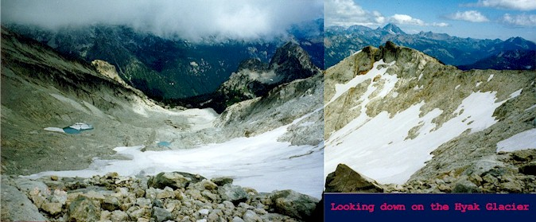
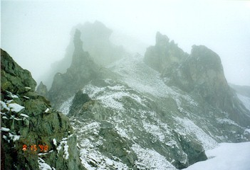
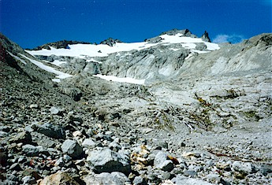
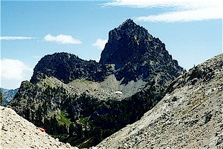
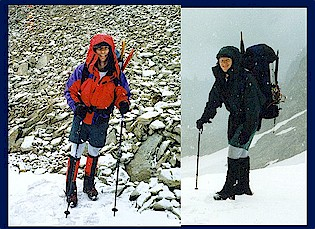
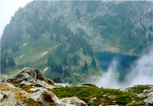
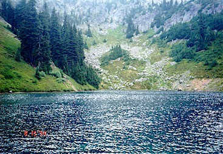

Mt. Daniels Attempt
August 15-16, 1998

This was supposed to be a report about Steve and I triumphantly scaling Clark Mountain, a hidden crown of the Napeequa valley. In July, we had walked 20 miles for this cruel taskmaster only to be turned back by weather. Our busy schedules allowed us the weekend of August 15-16 to attempt the peak again. And the weather gods had allocated this weekend for a storm from the Pacific after weeks of clear, sunny weather. Knowing this, and trying to keep a stiff upper lip (whatever that means), we sought alternative destinations, feeling we didn’t need another long walk with the glacier gear only to be rained out again. Steve suggested Silver Star Mountain, in the far north east, and Mt. Daniels in the central cascades. Itching to pound our shiny new ice screws in the lower open crevasses of a respectable icefield, we settled on Daniels for the Lynch glacier, whose ice sinks into Pea Soup Lake.
Before the trip I fretted nervously about my sleeping bag: take it or not? I’m an ultralight-wannabe, envious of alpinists with tiny day packs for multi-day trips. Steve liked the idea of leaving them, but I chickened out.

The temps had dropped 15 degrees, and heck, the bag only weighs 2 pounds! Compare that to the 12 pounds of technical gear, 6 pound rope, etc.
Off to a good start after the longish (2.5 hour) drive we admired the trail, and disparaged the “horse bombs” which carpeted it in widely-spaced clusters of teeming bacteria. Perhaps walking through these “Valleys of Stench” combined with our rather blackened humor on the way out gave us the idea for “Defecating Baby,” a toy inspired by Steve’s report of a doll which periodically has a “number 1.” I won’t elaborate. You’ll thank me.
We reached Squaw Lake (“Yes, I see! It does look like an indian squaw woman! She’s sitting, and chewing some kind of root! Her left hand is clutching a swatch of grass!”), then Cathedral Pass. Cathedral Rock bristled above us, looking very fine and impressive. We planned a climb of it for Monday morning.
Now we followed 2 hunters and a boy along a dubious trail under the Rock. A mis-step would hurtle you 800 feet down to Deep Lake, which wouldn’t be deep enough. The hunters moved quickly, huge ancient packs creaking and rifles casually swinging in arms. They sought a bear or cougar. Hmm. What would they do if they shot one?
We strolled passed beautiful Peggy’s Pond, turning west onto a
climber’s trail. Soon we were in a barren Mars-like landscape:
the valley carved by the Hyak glacier above us. We ascended the
valley along a rushing stream, admiring the warm, dry, fun-to-climb
rock on the way. Eating lunch at the toe of the now-small glacier,
we planned to climb to the Daniels ridgetop 1200 feet above.
Strapping on crampons for the hard snow, we headed up on our
favorite medium: snow! Ah, the satisfying crunch of it…good steps
and good views. Whoa! What’s that?
Here we had the great consolation prize of this trip: we saw a bear! A first for both of us, the bear was loping up the same snow field about to intersect with our route. He was pretty far away, but moving fast. We stopped and watched him climb the snow, get onto steeper rock by a waterfall and continue on up. I surmised that he was heading over the ridge far above for berries on the south face of the mountain. (Actually he probably smelled someone’s littered “Sour Cream \& Onion” potato chips…)

Soon he was a speck far above and then gone. We took about 7 times as long to cover the same distance. Lordy.
Happily, we removed crampons and started up the cliffs by the waterfall. It was quite steep and it took a while. There were a few sketchy moments where I seemed to be on 5th class terrain, with my boots straining on tiny holds. We had to confer and change routes often, looking for the lowest angle face. Starting to feel fatigued at the top, we opted to get on the climbers path traversing the ridge above. Right before the East Peak, we found ourselves in a cloud. We dropped the packs and continued, hoping for a good bivy site on the Daniel Glacier to the west. Once on the glacier, it was colder, windier, and visibility was down to 20 feet. We decided to camp where we left our packs (at about 7500 feet), where there was a little protection from the increasingly strong and cold wind. It looked like that bad weather was here…

To kill some time we climbed the East Peak, about 400 feet up scree and rock. It was fun, but we couldn’t see anything. A sadist coming down from the peak had told us that there were great rock walls on top to bivy under. This was a complete lie. Luckily, we didn’t take the bait, leaving our gear on the ridge. I was hoping to provide his sleeping bag with some warm, moist horse apples from the trail, but we never saw him again.
We were tired as we set up camp, chopping a platform in the snow. We took a short nap, and I woke up shivering. Boy was I cold! Steve made hot chocolate and started a good dinner of Mountain Swill. After eating the hot food and performing various errands I felt much better. A hot water bottle was essential as the wind crept through everything. Steve patiently melted snow while I tried to look useful. Then it was dark and we went to bed.
It was a long night and we woke often to rain, and then snow. By morning my bag was (I hoped) superficially damp, requiring some sun to dry things for the next night. At 8 am, big flakes of snow were falling on us, and we couldn’t see very far. The climb was over…sure, the summit was 500 feet up and only half a mile away, but why bother in this weather? Save it for another day.

We packed up with freezing fingers, warming up once under way. Traversing the ridge to the east, we admired the Hyak valley below, sun shining on a tarn. Once on the rocky ridge proper, I began to have fun, looking down to the right at a beautiful lake in a hanging valley, big slow-moving snowflakes providing a Christmas-y view. Moving down the ridge was fun, and soon we lost the faint path and traveled straight down to Peggy’s Pond. Our feet caused minor scree avalanches as the angle steepened, but there was no wailing or gnashing of teeth. After a brief snack at the pond, we zoomed almost non-stop the remaining 4 miles to the car.
Once back in Redmond, we had some fun by going rock climbing at
Vertical World.
This was Steve’s first time and he did really well.
I pushed myself a bit, and finally we were tired after 3 hours of
climbing. With that, I bade Steve farewell, wishing a safe trip home.

